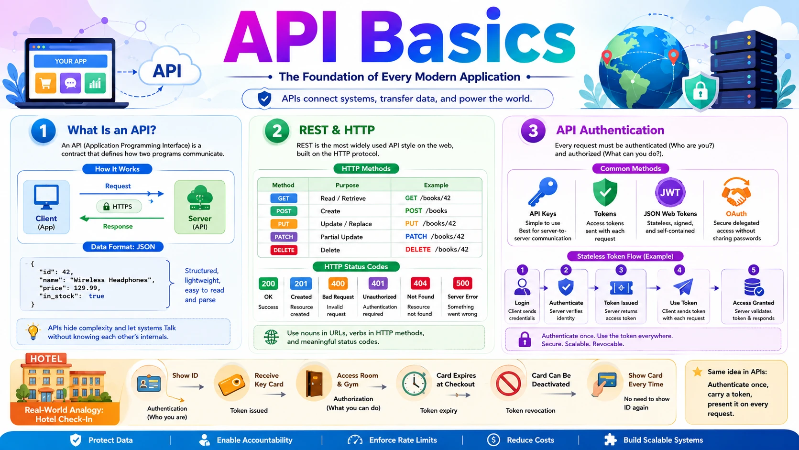
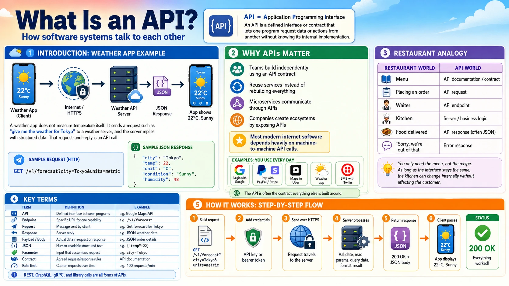
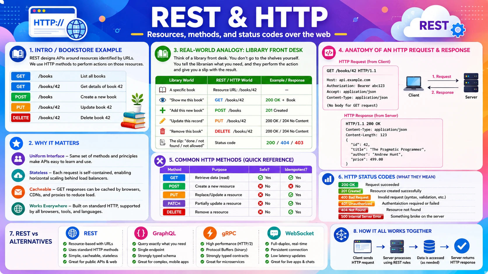
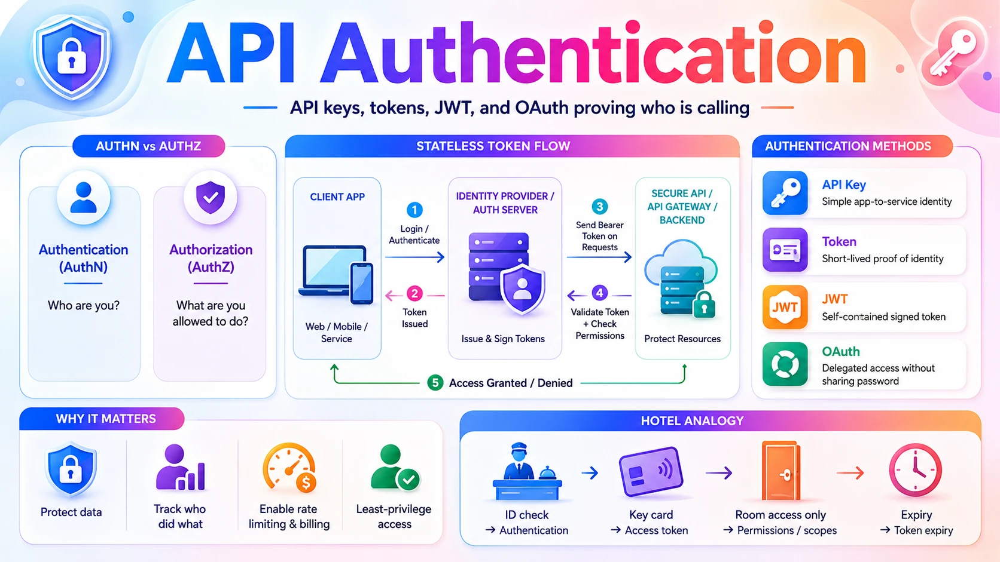

API Basics

📚 Table of Contents
Behind every app on your phone is a quiet conversation happening over the internet — and the language of that conversation is the API. This post covers three essential API topics every system designer must know. You will start with What Is an API? — the contract that lets two programs talk, the request & response cycle, and the JSON format that carries data between them. Next you will learn REST & HTTP — the most common API style on the web, built on HTTP methods like GET and POST, resource URLs, and status codes that tell the client what happened. Finally you will explore API Authentication — how a server knows who is calling and whether they are allowed, covering API keys, tokens, JWT, and OAuth. Each topic is explained with real-world analogies, step-by-step examples, and clear diagrams — starting from zero.
🔌 1. What Is an API?
Almost nothing you do online is handled by a single program. Your weather app does not measure the temperature itself — it asks a weather company. Your travel app does not own any airplanes — it asks dozens of airlines for their prices. The mechanism that lets one program ask another for data or an action, in a structured and predictable way, is the API. In this section we will build that idea from scratch — what an API is, why every modern system depends on them, and exactly what happens during a single API call.

1.1 🎯 Introduction
Imagine you open a weather app and it shows 22°C and sunny. Your phone did not measure that temperature. Instead, the app sent a message over the internet to a weather company's server — something like "give me the current weather for Tokyo" — and the server replied with the data. That structured request-and-reply, following rules both sides agreed on in advance, is an API call.
API stands for Application Programming Interface. The key word is interface — a clearly defined boundary through which two programs talk. The app (the caller) never sees how the weather server works inside; it only needs to know how to ask and what shape the answer will take. An API is the contract that defines exactly those two things: what you can ask for, and what you will get back.
This happens everywhere. When you "Log in with Google," your app calls Google's API. When you pay with PayPal on a shopping site, the site calls PayPal's API. When Uber shows your car on a map, it calls Google Maps' API. APIs are the invisible glue connecting the entire internet.
1.2 💡 Why It Matters
APIs are the backbone of how modern software is built. No company builds everything itself — they connect specialised services together through APIs. The scale is enormous: Google Maps handles billions of API calls per day, Stripe processes payments for millions of businesses entirely through its API, and Twitter/X served over 100 billion API calls per day at its peak. Studies suggest that more than 80% of all internet traffic is API calls between machines, not humans browsing web pages.
- APIs let teams build independently — the mobile team and the backend team agree on an API contract, then work in parallel without blocking each other.
- APIs let companies reuse instead of rebuild — why build a payment system when you can call Stripe's API in an afternoon?
- APIs are how microservices talk — in a large system, hundreds of internal services communicate with each other entirely through APIs.
- APIs create business ecosystems — by exposing an API, a company lets thousands of other developers build on top of it (the way Twilio powers SMS for countless apps).
Why system design cares: In almost every system design problem, one of the first steps is "define the API." Before you discuss databases or scaling, you decide what requests the system accepts and what it returns. The API is the contract everything else is built around.
1.3 🏠 Real-world Analogy
Think of a restaurant menu. The menu lists exactly what you can order and what you will receive. You don't walk into the kitchen, and you don't need to know how the chef cooks — you just point at an item, and the waiter brings it back. The menu is the interface between you (the customer) and the kitchen (the complex system you never see).
An API is exactly that menu for software. It lists the available "dishes" (the things you can request), specifies how to order them, and guarantees the shape of what comes back — all without exposing the kitchen.
| Restaurant World | API World | Role |
|---|---|---|
| 📋 The menu | 📜 API documentation / contract | Defines what can be ordered and what you get |
| 🗣️ Placing an order | 📤 API request | The client asks for something specific |
| 🧑💼 Waiter | 🔌 The API endpoint | Receives the order, passes it to the kitchen |
| 👨🍳 Kitchen | ⚙️ Server / business logic | Does the actual work, hidden from the customer |
| 🍽️ Food delivered to your table | 📥 API response (often JSON) | The result, in an agreed format |
| ❌ "Sorry, we're out of that" | ⚠️ Error response (e.g. 404) | A structured way to say the request failed |
The crucial insight: you only need the menu, not the recipe. As long as the menu (the API) stays the same, the kitchen can completely change how it cooks — new chefs, new equipment, new suppliers — and you never notice. This is why APIs let backend teams rebuild and scale their systems without breaking the apps that depend on them.
1.4 📖 Key Terms
| Term | Simple Definition | Quick Example |
|---|---|---|
| API | A defined interface that lets one program request data or actions from another | The Google Maps API, the Stripe API |
| Endpoint | A specific URL the client calls to access one capability of the API | https://api.weather.com/v1/forecast |
| Request | The message the client sends asking for something | "Get the forecast for Tokyo" |
| Response | The server's reply — the data asked for, or an error | A JSON object with temperature and conditions |
| Payload / Body | The actual data carried inside a request or response | The JSON describing a new order |
| JSON | A lightweight, human-readable text format for structured data | {"temp": 22, "unit": "C"} |
| Parameter | An input that customises a request | ?city=Tokyo&units=metric |
| Contract | The agreed rules: what to send and what comes back | The API documentation |
| Rate limit | A cap on how many requests a client may make in a time window | "100 requests per minute" |
Remember: An API is not a specific technology — it is an idea. REST, GraphQL, gRPC, and even a library function call are all APIs. They all share the same essence: a defined way for one piece of software to use another without knowing its internals.
1.5 🔢 How It Works
Let us trace exactly what happens when your weather app fetches today's forecast for Tokyo. This single round-trip is the heart of every API call.
| Step | What Happens |
|---|---|
| ① Build request | The app constructs a request to the weather API's endpoint, adding parameters: GET /v1/forecast?city=Tokyo&units=metric |
| ② Add credentials | The app attaches an API key in a header so the server knows who is calling (covered in Section 3). |
| ③ Send over HTTP | The request travels over the internet to the weather company's server using HTTPS. |
| ④ Server processes | The server validates the key, reads the parameters, looks up Tokyo's forecast in its database, and formats the result. |
| ⑤ Return response | The server sends back a status code (200 OK) and a JSON body with the data. |
| ⑥ Client parses | The app reads the JSON, pulls out temp and condition, and displays "22°C, Sunny" on screen. |
Here is what the request and the JSON response actually look like on the wire:
Key insight: The app and the weather server may be written in completely different languages, run on different hardware, and be owned by different companies. They cooperate perfectly because they both agree on the contract: how to ask (the endpoint and parameters) and what comes back (the JSON shape). That agreement is the entire value of an API.
1.6 🔀 Types & Variations
"API" is a broad idea, so it shows up in several flavours. We can group them two ways: by the architecture style they use, and by who is allowed to call them.
A. By Architecture Style
REST
The most common web API style. Uses HTTP methods and resource URLs, returns JSON. Simple and universal — covered in depth in Section 2.
GraphQL
The client asks for exactly the fields it needs in one query — no more, no less. Used by GitHub and Shopify to avoid over-fetching.
gRPC
A fast, binary protocol built for service-to-service calls inside large systems. Used heavily between microservices at Google.
SOAP
An older, XML-based, very strict style. Still common in banking and enterprise systems where formal contracts matter.
WebSocket
Keeps a two-way connection open for real-time data — live chat, stock tickers, multiplayer games — instead of one request per reply.
Library API
Not over the network at all — the functions a code library exposes for your program to call directly, like requests.get().
B. By Access Level
Public / Open API
Open to any external developer, usually with a key and rate limits. Example: the OpenWeather or Google Maps APIs.
Private / Internal API
Used only inside one company, between its own services. Most microservice traffic uses private APIs never exposed publicly.
Partner API
Shared with specific business partners under an agreement. Example: an airline exposing fares only to approved travel sites like Expedia.
For this post: When people say "API" on the web, they almost always mean a REST API returning JSON over HTTP. That is what Section 2 dives into. The other styles exist for specific needs — GraphQL for flexible queries, gRPC for fast internal calls, WebSocket for real-time streams.
1.7 🎨 Illustrated Diagram
The diagram below shows a single API call end to end: the client app sends a request to a specific API endpoint, the server runs its logic and reads the database, and a JSON response travels back. The client never touches the database directly — the API is the only door in.
Reading the diagram: The client sends a request with its API key ① to the endpoint, which validates and forwards it ② to the server. The server queries ③ the database and gets rows back ④, then returns a clean JSON response ⑤ to the client. The endpoint is the public "menu"; everything to its right is the hidden kitchen.
1.8 ✅ When to Use
You expose or call an API whenever two pieces of software need to cooperate without being merged into one. That covers almost every real system, but it helps to know when an API is the right tool — and when it is overkill.
| Use an API when… | You may not need one when… |
|---|---|
| A mobile app or website must talk to a backend server | Two functions live in the same program and can just call each other directly |
| You want to reuse another company's service (payments, maps, SMS) | The "integration" is a one-off script run manually once |
| You are splitting a system into microservices that must communicate | The data never leaves a single tiny script |
| You want external developers to build on top of your platform | Exposing the capability would create security or cost risk you can't control |
| Different teams need a stable contract to work in parallel | The contract would change every day — stabilise the design first |
Rule of thumb: If a boundary exists between two systems — different apps, different teams, different companies, or different services — put a well-defined API across it. The API becomes the stable promise that lets both sides change independently.
1.9 🏗️ Real-world Example — Booking a Flight on a Travel Site
Travel sites like Expedia or Skyscanner own no airplanes and run no payment networks. They are, in large part, an orchestra of API calls. Here is what happens when you search for a flight and book it:
| Step | Actor | What Happens |
|---|---|---|
| ① | 📱 Your Browser | Sends GET /search?from=NRT&to=JFK&date=2026-06-15 to the travel site's API |
| ② | ⚙️ Travel Site Server | Fans out calls to many airline APIs at once, asking each for fares on that route |
| ③ | ✈️ Airline APIs | Each airline returns JSON with its available flights and prices |
| ④ | ⚙️ Travel Site Server | Merges and sorts all results, sends one combined JSON list back to your browser |
| ⑤ | 👤 You | Pick a flight and click "Pay" — browser sends POST /bookings with your choice |
| ⑥ | 💳 Stripe / PayPal API | The server calls a payment API to charge your card securely |
| ⑦ | 📧 Email / SMS API | After payment succeeds, the server calls a messaging API to send your confirmation |
| ⑧ | 📱 Your Browser | Receives a 201 Created response with your booking reference |
Notice: A single flight booking triggered API calls to airlines, a payment provider, and a messaging service — none of which the travel site built itself. This is the real power of APIs: complex products are assembled by combining specialised services through their interfaces.
New terms above? The HTTP methods (GET,POST) and status codes (201 Created) are explained fully in Section 2. The API keys and tokens that keep these calls secure are covered in Section 3. For now, just notice how many independent APIs cooperate to serve one user action.
1.10 ⚖️ Trade-offs
| ✅ Advantages | ❌ Disadvantages |
|---|---|
| Decoupling — the kitchen can change completely as long as the menu stays the same; backends evolve without breaking clients | Network dependency — every call is a round-trip that can be slow, fail, or time out |
| Reuse — call Stripe, Maps, or Twilio instead of building payments, mapping, or SMS yourself | Versioning pain — once others depend on your API, changing it can break them; you must version carefully |
| Parallel work — teams agree on a contract, then build both sides independently | Security surface — every public endpoint is a door attackers can probe; needs auth, rate limits, validation |
| Ecosystem — exposing an API lets outside developers extend your platform | Hidden cost — third-party APIs often charge per call and impose rate limits |
| Encapsulation — internal complexity and data stay hidden behind a clean interface | Debugging is harder — a failure may live in another company's service you cannot see into |
1.11 🚫 Common Mistakes
| # | ❌ Common Mistake | ✅ The Reality |
|---|---|---|
| 1 | "API" means a website | An API is an interface for programs, not people. A website is for humans to read; an API returns structured data (JSON) for other software to use. |
| 2 | API = REST | REST is just one popular style. GraphQL, gRPC, SOAP, WebSocket, and even a local library function are all APIs. REST is common, not synonymous. |
| 3 | The client needs to know how the server works | The whole point is that it does not. The client only knows the contract — the endpoint and the data shape. The server's internals stay hidden. |
| 4 | Skipping the contract and "just coding" | Without an agreed API contract, the frontend and backend drift apart and integration fails. Define the request and response shape first. |
| 5 | Returning raw database rows directly | A good API returns a clean, stable shape — not your internal table columns. Otherwise every database change breaks every client. |
| 6 | Ignoring errors and rate limits | Real API calls fail, time out, and get throttled. Robust clients handle error responses and retries — they don't assume every call succeeds. |
1.12 📝 Summary
- An API is a contract — it defines what one program can ask another for, and what it gets back.
- It hides the kitchen — callers use the interface without knowing the internals, so backends can change freely.
- JSON is the common language — most web APIs exchange data as lightweight, human-readable JSON.
- APIs come in styles and access levels — REST, GraphQL, gRPC, SOAP, WebSocket; and public, private, or partner.
- Modern systems are assembled from APIs — products combine specialised services (payments, maps, messaging) instead of building everything in-house.
1.13 🏋️ Design Challenge
🎬 Challenge: Design the API for a movie ticket booking app
You are designing the API behind an app like BookMyShow or Fandango. Think through the following:
- What endpoints would you expose? (Hint: think about browsing movies, picking a show, and booking seats.)
- For each endpoint, what would the request carry, and what JSON would the response return?
- Which third-party APIs would you call instead of building yourself?
- What should happen if two users try to book the same seat at the same time?
👁️ Show Answer
Endpoints you might expose:
- 🎬
GET /movies— list movies now showing - 📍
GET /movies/{id}/shows?city=Tokyo— showtimes for a movie - 💺
GET /shows/{id}/seats— which seats are free - 🎟️
POST /bookings— reserve seats and pay
Example contract for booking: the request body carries the show ID and chosen seats; the response returns a booking reference and status.
Third-party APIs to call:
- 💳 A payment API (Stripe/PayPal) to charge the card
- 📧 An email/SMS API (SendGrid/Twilio) to deliver the ticket
- 🗺️ A maps API to show the cinema location
Two users, one seat:
The seat must be locked the moment one user starts checkout, so the second user's request returns a 409 Conflict ("seat no longer available"). This is a concurrency problem solved with short-lived locks or a database transaction — patterns we will revisit in later phases of the series.
1.14 ☁️ Cloud Service Mapping
In the cloud, you rarely expose your servers directly. Instead, you put a managed API layer in front of them that handles routing, validation, and throttling. These are the core services for hosting and managing an API on each platform:
| Need | AWS (Primary) | GCP | Azure |
|---|---|---|---|
| Host & manage an API — a front door that receives all API calls | Amazon API Gateway | Apigee / API Gateway | Azure API Management |
| Run the code behind it — serverless function that responds to calls | AWS Lambda | Cloud Functions | Azure Functions |
| Build a GraphQL API — managed flexible-query endpoint | AWS AppSync | Apigee (with GraphQL) | Azure API Management |
Simplest AWS picture: A client calls API Gateway (the public endpoint) → Gateway validates the request and forwards it to a Lambda function (your logic) → Lambda returns JSON → Gateway sends it back to the client. That is a complete, scalable API with no servers to manage.
🌐 2. REST & HTTP
Now that you know what an API is, the next question is: what rules do most web APIs actually follow? The answer is REST, an architectural style that runs on top of the HTTP protocol. Together they give the web a simple, uniform vocabulary: address a resource with a URL, act on it with an HTTP method like GET or POST, and read the status code to learn what happened. In this section you will learn the anatomy of an HTTP request, the methods and status codes that power every REST API, what makes an API truly RESTful, and how REST compares to alternatives like GraphQL, gRPC, and WebSocket — so you can choose the right one in a system design.

2.1 🎯 Introduction
Imagine you are building an online bookstore. You need to list all books, show one book's details, add a new book, update a price, and remove a book that's out of print. That is five different actions on one kind of thing — a "book." REST gives you a clean, predictable way to express all five using nothing but a URL and an HTTP method.
REST stands for Representational State Transfer. It is not a protocol or a library — it is a style, a set of conventions for designing APIs. HTTP (HyperText Transfer Protocol) is the actual protocol the browser already uses to load every web page, and REST simply reuses it. In a REST API, each "thing" is a resource with its own URL (/books/42), and the HTTP method you use (GET, POST, PUT, DELETE) says what you want to do to it.
🔗 REST vs HTTP: HTTP is the transport — the rules for sending a request and getting a response. REST is a discipline for how to use HTTP well: nouns in the URL, verbs as HTTP methods, meaningful status codes, and no server-side session state. You can use HTTP without being RESTful, but you cannot be RESTful without HTTP.
2.2 💡 Why It Matters
REST is the lingua franca of the web. The vast majority of public web APIs are REST — including GitHub, Stripe, Twitter/X, and Shopify. Surveys of public APIs consistently put REST well above 70% of all of them. When a system design problem says "design the API," the default expectation is a REST API returning JSON over HTTP.
- REST is uniform — once you learn GET/POST/PUT/DELETE, every REST API feels familiar; you don't relearn the basics per service.
- REST is stateless — each request carries everything the server needs, so any server can handle any request. That is what lets you put dozens of identical servers behind a load balancer and scale horizontally.
- REST is cacheable — GET responses can be cached by browsers, CDNs, and proxies, cutting load dramatically.
- REST uses plain HTTP — it works with every language, every browser, every tool (
curl, Postman) with zero special setup.
Why system design cares: Statelessness is the single most important property here. Because a REST server keeps no memory of past requests, you can run many copies of it and route any request to any copy. This is the foundation of horizontal scaling — a theme that returns in almost every later topic in this series.
2.3 🏠 Real-world Analogy
Think of a library front desk. Every book is a resource with a shelf address. You don't wander the stacks yourself — you make a request at the desk, and you phrase it as an action on a specific book: "show me book #42," "add this new book," "update this book's record," "remove this book." The librarian performs the action and hands you a slip telling you how it went — "done," "not found," or "you're not allowed."
| Library World | REST / HTTP World | Meaning |
|---|---|---|
| 📕 A specific book | 🔗 Resource URL — /books/42 | The thing you are acting on |
| 👀 "Show me this book" | GET /books/42 | Read, without changing anything |
| ➕ "Add this new book" | POST /books | Create a new resource |
| ✏️ "Update this record" | PUT /books/42 | Replace/modify the resource |
| 🗑️ "Remove this book" | DELETE /books/42 | Delete the resource |
| 🧾 The slip: "done / not found / not allowed" | 📊 Status code — 200 / 404 / 403 | How the request went |
Notice the pattern: the book (noun) goes in the URL, and the action (verb) is the HTTP method. A well-designed REST API never puts verbs in the URL — you never see /getBook or /deleteBook42, because the method already says the verb.
2.4 📖 Key Terms
| Term | Simple Definition | Quick Example |
|---|---|---|
| HTTP | The protocol browsers and servers use to exchange requests and responses | Every web page load is HTTP(S) |
| REST | A style for designing APIs using HTTP methods and resource URLs | GitHub's API is RESTful |
| Resource | Any "thing" the API exposes, identified by a URL | /users/7, /orders/55 |
| HTTP Method | The verb that says what action to take on a resource | GET, POST, PUT, PATCH, DELETE |
| Status Code | A 3-digit number in the response saying how it went | 200 OK, 404 Not Found, 500 Error |
| Header | Key-value metadata attached to a request or response | Content-Type: application/json |
| Body / Payload | The data sent with a request or returned in a response | The JSON for a new book |
| Stateless | The server keeps no memory between requests; each is self-contained | Every call re-sends its auth token |
| Idempotent | Doing it once or many times gives the same result | GET, PUT, DELETE are idempotent; POST is not |
| CRUD | The four basic data operations: Create, Read, Update, Delete | Maps to POST, GET, PUT, DELETE |
2.5 🔢 How It Works
A REST call is just a well-structured HTTP request and response. Let us break down the four parts that make it work: the request anatomy, the methods, the status codes, and the rules that keep it stateless.
A. Anatomy of a Request & Response
Every HTTP request has four parts: a method + path (the action and the resource), headers (metadata like content type and auth), and an optional body (data, used by POST/PUT). The response mirrors it: a status code, headers, and a body. Here is a request to add a book to our store:
And the server's response — a 201 Created status with the newly created resource in the body:
B. HTTP Methods & CRUD
Each HTTP method maps to one of the four basic data operations, known as CRUD. This mapping is the heart of REST.
| Method | CRUD | What It Does | Example | Safe / Idempotent |
|---|---|---|---|---|
| GET | Read | Fetch a resource; never changes data | GET /books/42 | ✅ Safe & idempotent |
| POST | Create | Create a new resource | POST /books | ❌ Not idempotent |
| PUT | Update | Replace a resource entirely | PUT /books/42 | ✅ Idempotent |
| PATCH | Update | Modify part of a resource | PATCH /books/42 | ⚠️ Usually not |
| DELETE | Delete | Remove a resource | DELETE /books/42 | ✅ Idempotent |
Idempotency matters in design: If a network hiccup makes a client retry a request, an idempotent method (GET, PUT, DELETE) is safe to repeat — the result is the same. POST is not: retrying "create order" could charge a customer twice. This is why payment APIs add an idempotency key to make POST safe to retry.
C. HTTP Status Codes
The status code is the first thing a client reads. They come in five families, grouped by the first digit:
| Range | Meaning | Common Codes |
|---|---|---|
| 2xx ✅ | Success — the request worked | 200 OK · 201 Created · 204 No Content |
| 3xx ↪️ | Redirection — look elsewhere | 301 Moved Permanently · 304 Not Modified |
| 4xx 🙅 | Client error — the caller did something wrong | 400 Bad Request · 401 Unauthorized · 403 Forbidden · 404 Not Found · 429 Too Many Requests |
| 5xx 💥 | Server error — the server failed | 500 Internal Server Error · 502 Bad Gateway · 503 Service Unavailable |
The 4xx vs 5xx rule: 4xx means "you made a mistake" (fix your request — wrong URL, bad data, missing auth). 5xx means "we made a mistake" (the server broke; retrying later may help). Returning the right family is critical — a server that returns 200 for an error makes every client misbehave.
D. Statelessness & REST Constraints
What makes an API truly "RESTful" is a small set of constraints. The most important for system design is statelessness: the server stores nothing about the client between requests. Every request must carry its own context — including who the caller is (the auth token). The benefits compound:
- Stateless — any server can handle any request, so you scale by simply adding more servers.
- Uniform interface — resources as URLs, actions as methods, consistent everywhere.
- Cacheable — responses say whether they can be cached, letting CDNs and browsers serve them without hitting the server.
- Client–server separation — the frontend and backend evolve independently as long as the contract holds.
2.6 🔀 Types & Variations — REST vs Other API Styles
REST is the default, but it is not the only option. In system design you are expected to know the main alternatives and, more importantly, when each one is the better choice. You rarely implement these by hand — you justify picking one. Here are the four styles you should recognise:
REST
Resources + HTTP methods + JSON. Simple, cacheable, universal. The default for public web and mobile APIs. Can over-fetch (returns fixed fields) or need many round-trips.
GraphQL
One endpoint; the client asks for exactly the fields it wants in a single query. Solves over-fetching and under-fetching. Used by GitHub and Shopify for rich, mobile-friendly clients.
gRPC
Binary protocol over HTTP/2 using Protocol Buffers. Very fast and compact. Ideal for internal service-to-service calls in microservices, not for browsers.
WebSocket
A persistent, two-way connection for real-time data. The server can push without being asked. Used for chat, live feeds, notifications, and multiplayer games.
Side by side, the trade-offs become clear:
| Style | Transport | Data Format | Communication | Best For |
|---|---|---|---|---|
| REST | HTTP/1.1 | JSON (text) | Request → response | Public APIs, CRUD, web & mobile |
| GraphQL | HTTP | JSON (text) | Request → response (flexible query) | Mobile clients, avoiding over-fetch |
| gRPC | HTTP/2 | Protobuf (binary) | Request → response + streaming | Internal microservice calls, low latency |
| WebSocket | TCP (upgraded from HTTP) | Any (often JSON) | Two-way, persistent, real-time | Chat, live updates, presence, games |
SOAP, briefly: You may still meet SOAP — an older, strict, XML-based style used in some banking and enterprise systems. For new designs it is rarely chosen, but it is worth recognising the name.
2.7 🎨 Illustrated Diagram
The diagram below shows the same resource — a book — acted on by the four main HTTP methods. One URL pattern, four verbs, four outcomes. This is the uniform interface that makes REST so easy to learn.
Reading the diagram: The client uses one resource path (/books and /books/42) with different methods to read, create, update, and delete. The server translates each into a database operation and replies with the matching status code. Same noun, different verbs — that is REST in one picture.
2.8 ✅ When to Use
REST is the right default for the large majority of APIs. But knowing when to reach for GraphQL, gRPC, or WebSocket instead is exactly the kind of decision a system design expects you to justify. Use this decision guide:
| Reach for REST when… | Reach for an alternative when… |
|---|---|
| You are building a public API or a standard CRUD service | Mobile clients over-fetch or need many round-trips → GraphQL |
| You want caching, simplicity, and universal tooling | Two internal microservices need fast, low-latency calls → gRPC |
| Clients are browsers, mobile apps, or third-party developers | The client needs live server-pushed updates → WebSocket |
| Resources map cleanly to nouns (users, orders, books) | You need bidirectional streaming or real-time presence → WebSocket |
A quick way to choose, phrased as questions you can ask in a design discussion:
- Is it a public/CRUD API for varied clients? → REST.
- Do clients need flexible, precise field selection? → GraphQL.
- Is it internal, high-throughput, latency-sensitive service-to-service traffic? → gRPC.
- Does the server need to push data in real time? → WebSocket (or Server-Sent Events for one-way push).
Rule of thumb: Start with REST. Switch only when a concrete requirement forces it — real-time push (WebSocket), internal speed (gRPC), or client-driven queries (GraphQL). "We use REST for the public API and gRPC between internal services" is a very common, very defensible architecture.
2.9 🏗️ Real-world Example — The GitHub REST API
GitHub's public REST API is a textbook example of clean design. Every "thing" on GitHub — a repository, an issue, a user — is a resource with a predictable URL, and you act on it with standard HTTP methods. Here is a typical sequence when an app manages issues on a repo:
| Step | Request | What Happens |
|---|---|---|
| ① | GET /repos/octocat/hello/issues | Lists all open issues — returns 200 OK with a JSON array |
| ② | GET /repos/octocat/hello/issues/7 | Fetches issue #7 in detail — 200 OK, or 404 if it doesn't exist |
| ③ | POST /repos/octocat/hello/issues | Creates a new issue from the JSON body — returns 201 Created |
| ④ | PATCH /repos/octocat/hello/issues/7 | Updates issue #7's title or state — 200 OK |
| ⑤ | (no token) | Any write without a valid token returns 401 Unauthorized |
| ⑥ | (too many calls) | Exceeding the rate limit returns 429 Too Many Requests |
Creating an issue looks like this on the wire — note the noun in the URL, the verb as the method, and JSON in both directions:
Notice the discipline: nouns in the URL (/issues), verbs as methods (POST to create), correct status codes (201, 401, 429), and JSON bodies. That consistency is exactly why developers can pick up the GitHub API in minutes — and why REST became the web's default.
2.10 ⚖️ Trade-offs
| ✅ Advantages | ❌ Disadvantages |
|---|---|
| Simple & universal — plain HTTP and JSON; works with every language and tool | Over-fetching — a fixed endpoint may return more fields than the client needs |
| Stateless → scalable — any server handles any request; scale by adding servers | Under-fetching — getting related data may take several round-trips (the "N+1" problem) |
| Cacheable — GET responses cache cleanly in browsers, CDNs, and proxies | No built-in real-time — push requires WebSocket or polling on top |
| Uniform & predictable — same method/status conventions across every REST API | Text overhead — JSON is larger and slower to parse than binary formats like Protobuf |
| Great tooling — curl, Postman, browser dev tools all speak HTTP natively | Loose by convention — "RESTful" is a style, so poorly designed REST APIs are common |
2.11 🚫 Common Mistakes
| # | ❌ Common Mistake | ✅ The Reality |
|---|---|---|
| 1 | Putting verbs in the URL | Endpoints like /getBook or /createUser break REST. The URL is the noun (/books); the method is the verb (GET, POST). |
| 2 | Using GET to change data | GET must be safe — it never modifies anything. Crawlers and caches replay GETs freely; using one to delete or update causes chaos. |
| 3 | Returning 200 for everything | Errors need the right status. Return 404 for not found, 400 for bad input, 401/403 for auth, 500 for server faults — not 200 with an "error" field. |
| 4 | Storing session state on the server | REST is stateless. Keeping per-client state on one server breaks horizontal scaling. Put state in a token or shared store, not in server memory. |
| 5 | Ignoring idempotency on retries | Retried POSTs can duplicate orders or charges. Use idempotency keys, or design create operations to be safely repeatable. |
| 6 | No versioning | Changing a live API breaks every client. Version it (/v1/books) so you can evolve without breaking existing callers. |
2.12 📝 Summary
- REST is a style, HTTP is the protocol — nouns in the URL, verbs as methods, JSON in the body.
- Methods map to CRUD — GET reads, POST creates, PUT/PATCH update, DELETE removes.
- Status codes tell the story — 2xx success, 4xx your fault, 5xx server's fault.
- Statelessness enables scale — no server-side session means any server can serve any request.
- Know the alternatives — GraphQL for flexible queries, gRPC for internal speed, WebSocket for real-time push; start with REST and switch only when a requirement demands it.
2.13 🏋️ Design Challenge
✅ Challenge: Design a RESTful API for a to-do app
You are designing the API behind a simple to-do list app where users create, view, complete, and delete tasks. Think through the following:
- What resource URLs and HTTP methods would you expose for the four actions?
- Which status code should each return on success — and what should happen for a task that doesn't exist?
- Which of your endpoints are idempotent, and why does that matter?
- If the app later needs a live "shared list" that updates instantly across devices, which API style would you add — and why not just REST?
👁️ Show Answer
Endpoints (noun in URL, verb as method):
| Action | Request | Success Code |
|---|---|---|
| List tasks | GET /tasks | 200 OK |
| Create a task | POST /tasks | 201 Created |
| View one task | GET /tasks/9 | 200 OK (404 if missing) |
| Mark complete | PATCH /tasks/9 | 200 OK |
| Delete a task | DELETE /tasks/9 | 204 No Content |
Idempotency: GET, PUT, and DELETE are idempotent — calling them repeatedly leaves the system in the same state. That matters because a client can safely retry them after a network failure. POST is not idempotent: a retried "create task" could add the task twice, so you might add an idempotency key.
Live shared list: Plain REST can't push updates — the client would have to poll GET /tasks repeatedly, which is wasteful and laggy. Add a WebSocket connection so the server pushes changes to every device the instant a task changes. REST still handles the create/update/delete; WebSocket handles the real-time broadcast.
2.14 ☁️ Cloud Service Mapping
Cloud platforms provide managed gateways that host REST APIs and handle routing, throttling, and (in some cases) WebSocket and gRPC traffic, so you don't run that plumbing yourself:
| Need | AWS (Primary) | GCP | Azure |
|---|---|---|---|
| Host a REST API — managed HTTP front door | API Gateway (REST / HTTP API) | Apigee / API Gateway | Azure API Management |
| Real-time / WebSocket — push connections | API Gateway (WebSocket API) | Cloud Run / Firebase | Azure Web PubSub |
| GraphQL endpoint — managed flexible queries | AWS AppSync | Apigee (with GraphQL) | Azure API Management |
Simplest AWS picture: Expose a REST API on API Gateway → it routes each method to a Lambda function or backend service → the function returns JSON with the right status code. For real-time features, switch the same gateway to a WebSocket API.
🔐 3. API Authentication
An open API is an open door. Once you expose endpoints to the world, the server needs to answer two questions on every single request: who is calling? and are they allowed to do this? The first is authentication, the second is authorization, and together they are what keep your data, your users, and your costs safe. In this section you will learn the main ways APIs prove identity — API keys, tokens, JWT, and OAuth — how a stateless token flow actually works, and which method to choose for a given system.

3.1 🎯 Introduction
Imagine a photo-printing app asks to access your Google Photos so it can print your pictures. You click "Allow" — and it works. But notice what you never did: you never gave the app your Google password. Instead, Google handed the app a limited token that lets it read your photos and nothing else, which you can revoke at any time. That is API authentication done right, and the mechanism behind it is called OAuth.
Two related ideas sit at the heart of this topic, and mixing them up is the most common beginner error:
- Authentication (AuthN) — "Who are you?" The server verifies your identity, usually by checking a credential like a password, an API key, or a token.
- Authorization (AuthZ) — "What are you allowed to do?" Once identity is known, the server decides which actions and data you may access.
Authentication always comes first — you can't decide what someone is allowed to do until you know who they are. The photo app was authenticated (Google knew which app it was) and authorized for a narrow scope (read your photos, but not delete them or read your email).
3.2 💡 Why It Matters
Every public endpoint is a target. Industry reports estimate that APIs are now the most common attack surface for web applications, with the majority of organisations reporting an API-related security incident. A single unprotected endpoint can leak millions of user records — and a leaked API key can run up enormous bills on a paid service before anyone notices.
- Data protection — without authentication, anyone who guesses your URL can read or modify your users' data.
- Accountability — identity lets you log who did what, essential for auditing and abuse investigation.
- Rate limiting & billing — you can only enforce "100 requests per minute" or "charge per call" if you know which client is calling.
- Least privilege — scopes and roles let you give each caller exactly the access it needs and no more, limiting the blast radius of a leak.
⚠️ Authentication is never optional in design. In any system design discussion, as soon as you draw an API, you should be ready to say how it authenticates callers. "All endpoints require a bearer token over HTTPS, validated at the API Gateway" is the kind of sentence that shows you think about security from the start.
3.3 🏠 Real-world Analogy
Think of checking into a hotel. At the front desk you show your ID — that is authentication, proving who you are. In return you get a key card — a token. The key card opens your room and the gym, but not other guests' rooms or the staff office — that is authorization, defined by what the card is permitted to do. The card expires at checkout, and the front desk can deactivate it instantly if it's lost.
| Hotel World | API Auth World | Meaning |
|---|---|---|
| 🪪 Showing your ID at check-in | 🔑 Logging in with credentials | Authentication — proving identity |
| 💳 The key card you receive | 🎟️ Access token (e.g. JWT) | A short-lived proof you can present later |
| 🚪 Card opens your room + gym only | 📋 Scopes / permissions | Authorization — what you may access |
| ⏰ Card stops working at checkout | ⌛ Token expiry | Access is time-limited by design |
| 🚫 Front desk deactivates a lost card | ♻️ Token revocation | Access can be withdrawn |
| 🤝 Showing the card, not your ID, at the gym | 📨 Sending the token on each request | You don't re-prove identity every time |
The key insight: you show your ID once, then carry a key card you present everywhere else. APIs work the same way — you authenticate once to get a token, then attach that token to every later request instead of sending your password again and again.
3.4 📖 Key Terms
| Term | Simple Definition | Quick Example |
|---|---|---|
| Authentication | Verifying who the caller is | Checking a password or token |
| Authorization | Deciding what the caller may do | "Can read photos, cannot delete" |
| Credential | Any secret used to prove identity | Password, API key, private key |
| API Key | A long secret string identifying a calling application | sk_live_a1b2c3d4 |
| Token | A temporary credential issued after login, sent on each request | A bearer token in a header |
| Bearer Token | A token where "whoever holds it" is granted access | Authorization: Bearer <token> |
| JWT | A self-contained, signed token carrying user data as JSON | eyJhbGci... |
| OAuth 2.0 | A standard for granting an app limited access on your behalf — without sharing your password | "Log in with Google" |
| Scope | A named permission attached to a token | photos.read |
| Refresh Token | A long-lived token used only to get new short-lived access tokens | Renews access without re-login |
3.5 🔢 How It Works
Modern APIs almost always use token-based authentication. Let us break down how it works: the difference between AuthN and AuthZ, the token flow itself, what's inside a JWT, and why HTTPS is non-negotiable.
A. Authentication vs Authorization
These two steps happen on every protected request, in order. Authentication answers "who are you?" by validating the token. Authorization then answers "are you allowed to do this?" by checking the token's scopes or the user's role against the action requested. A valid token with the wrong scope returns 403 Forbidden; a missing or invalid token returns 401 Unauthorized.
B. The Token-Based Flow
The flow has two phases — log in once, then reuse the token. This keeps the API stateless: the server doesn't remember the client between calls; the token itself carries the proof.
| Step | What Happens |
|---|---|
| ① Log in | The client sends credentials once (e.g. POST /login with email + password). |
| ② Issue token | The server verifies them and returns an access token (often a JWT) plus a refresh token. |
| ③ Store token | The client keeps the token (in memory or secure storage). |
| ④ Send on each call | Every later request carries the token in the header: Authorization: Bearer <token>. |
| ⑤ Validate | The server checks the token's signature and expiry — no database lookup needed for a JWT — then authorizes the action. |
| ⑥ Refresh | When the access token expires, the client uses the refresh token to get a new one — no re-login. |
C. Anatomy of a JWT
A JWT (JSON Web Token) is the most common access token format. It is three Base64 parts joined by dots — header.payload.signature. The header says how it's signed, the payload carries claims (who the user is, scopes, expiry), and the signature proves it hasn't been tampered with. Because the signature can be verified with a secret key alone, the server needs no database lookup to trust it — that is what makes JWTs stateless and fast.
⚠️ A JWT payload is encoded, not encrypted. Anyone holding the token can read its contents — only the signature is protected. Never put passwords or secrets in a JWT payload. The signature stops tampering; it does not hide the data.
D. HTTPS Is Mandatory
Every authentication method here sends a secret over the network — an API key, a password, or a bearer token. Over plain HTTP, anyone on the path can read it and impersonate the caller. HTTPS encrypts the entire request, including headers, so the token can't be stolen in transit. Authentication without HTTPS is no security at all.
3.6 🔀 Types & Variations
There are a handful of authentication methods you'll meet in practice. Each fits a different situation — from simple server-to-server calls to letting a third-party app act on a user's behalf.
API Key
A single long secret string sent in a header. Simple, identifies an application (not a user). Great for server-to-server and public data APIs. Easy to leak if careless.
Basic Auth
Username + password Base64-encoded in the header. Simple but sends credentials on every call — only acceptable over HTTPS, and largely superseded by tokens.
Bearer Token / JWT
A signed, expiring token issued after login, sent as Authorization: Bearer. Stateless and scalable — the dominant choice for modern APIs and microservices.
OAuth 2.0
Delegated access: a user lets one app use another on their behalf without sharing a password. Powers "Log in with Google/GitHub." Issues scoped, revocable tokens.
Session Cookie
Classic web approach: the server stores a session and the browser sends a cookie. Stateful — simple for single web apps, harder to scale across many servers.
Mutual TLS (mTLS)
Both client and server present certificates to prove identity. Strong and common for sensitive internal service-to-service traffic in zero-trust networks.
🔗 API key vs token — the key difference: an API key usually identifies an application and is long-lived, while a token (JWT) identifies a user session, carries scopes, and expires. OAuth is not a fourth competitor — it's a framework that issues tokens; the token it hands out is typically a bearer token/JWT.
3.7 🎨 Illustrated Diagram
The diagram below shows the token-based flow end to end: the client logs in once to get a token, then presents that token on every later call to the API, which validates it before responding. The login step and the data step are cleanly separated.
Reading the diagram: The client authenticates once at the auth server ① and receives a token ②. From then on it attaches that token to every API request ③. The API server validates the token's signature and scopes before touching the database ④⑤ and returns the result ⑥. Notice the API server never sees the password — only the token.
3.8 ✅ When to Use
Picking the right method is a design decision you should be able to justify. The choice comes down to who is calling and on whose behalf. Use this guide:
| Method | Use it when… | Avoid it when… |
|---|---|---|
| API Key | A server or script calls your API to access public or app-level data | You need to identify individual end users or fine-grained permissions |
| Bearer Token / JWT | Users log into your own app and call your API; stateless microservices | You can't store the token securely on the client |
| OAuth 2.0 | A third-party app needs limited access to a user's data on another service | It's your own first-party app — full OAuth is overkill, a plain token is enough |
| Session Cookie | A traditional server-rendered web app with one backend | You need to scale across many stateless servers or serve non-browser clients |
| Mutual TLS | Sensitive internal service-to-service calls in a zero-trust network | Public clients (browsers, mobile apps) — cert management is impractical |
Rule of thumb: For a typical app — "users log in, mobile/web client calls our API" — use JWT bearer tokens over HTTPS. The moment a third party needs access to a user's data without their password, reach for OAuth 2.0. For pure machine-to-machine, an API key (or mTLS for sensitive internal traffic) is usually enough.
3.9 🏗️ Real-world Example — "Log in with Google" (OAuth 2.0)
Back to the photo-printing app that wants your Google Photos. Here is the OAuth 2.0 flow that lets it read your photos without ever seeing your Google password:
| Step | Actor | What Happens |
|---|---|---|
| ① | 📱 Photo App | Redirects you to Google, asking for the photos.read scope |
| ② | Asks you to log in (on Google's own page) and shows a consent screen: "Photo App wants to view your photos" | |
| ③ | 👤 You | Click Allow — your password stays with Google, never the app |
| ④ | Sends the app a one-time authorization code | |
| ⑤ | 📱 Photo App | Exchanges that code (plus its own secret) for an access token scoped to photos.read |
| ⑥ | 📱 Photo App | Calls GET /photos with the token; Google returns your photos — and only photos |
| ⑦ | 👤 You (later) | Can revoke the app's access anytime in Google settings, with no password change |
Contrast that with a simple paid API like a weather or payment service, where no end user is involved — you just authenticate the application itself with an API key:
Why OAuth is brilliant: three separate problems are solved at once — the app never learns your password, it gets only the narrow scope you approved, and you can revoke it independently. That separation is exactly why "Log in with Google/Apple/GitHub" is everywhere.
3.10 ⚖️ Trade-offs
Token-based authentication (JWT) is the modern default, so it's worth weighing its strengths against the stateful session approach it largely replaced:
| ✅ Advantages of Token-Based Auth | ❌ Disadvantages / Cautions |
|---|---|
| Stateless — the token is self-contained, so any server can validate it; scales horizontally with no shared session store | Hard to revoke early — a valid JWT works until it expires; instant revocation needs a denylist or short lifetimes |
| Cross-domain & mobile friendly — works cleanly for APIs, mobile apps, and multiple services, unlike cookies | Token theft = impersonation — a stolen bearer token is usable by anyone; HTTPS and secure storage are essential |
| Fast validation — signature check needs no database lookup | Payload is readable — encoded, not encrypted; never store secrets in it |
| Fine-grained scopes — permissions travel inside the token | Size — a JWT is larger than a session ID and is sent on every request |
| Decoupled auth — a dedicated auth server can issue tokens many services trust | Clock & key management — expiry checks and signing-key rotation must be handled correctly |
3.11 🚫 Common Mistakes
| # | ❌ Common Mistake | ✅ The Reality |
|---|---|---|
| 1 | Hardcoding API keys in client code or Git | Keys in front-end JavaScript or committed to a repo are public. Keep secrets server-side, in environment variables or a secrets manager, and rotate any that leak. |
| 2 | Authentication over plain HTTP | Any token or key sent over HTTP can be sniffed and reused. Always require HTTPS for every authenticated endpoint. |
| 3 | Confusing authentication with authorization | Knowing who someone is (AuthN) is not the same as letting them act (AuthZ). A logged-in user must still be checked against scopes/roles for each action. |
| 4 | Putting secrets in a JWT payload | The payload is only Base64-encoded, not encrypted — anyone can read it. Store identifiers and scopes, never passwords or sensitive data. |
| 5 | Tokens that never expire | A non-expiring token is a permanent key if stolen. Use short-lived access tokens plus refresh tokens so leaked tokens die quickly. |
| 6 | No rate limiting per identity | Without per-key/per-user limits, one client can overwhelm your API or rack up costs. Tie rate limits to the authenticated identity. |
3.12 📝 Summary
- AuthN ≠ AuthZ — authentication proves who you are; authorization decides what you may do.
- Token-based auth is the default — log in once, then send a bearer token (often a JWT) on every request.
- A JWT is signed, not secret — the signature blocks tampering, but the payload is readable; keep secrets out of it.
- OAuth grants delegated access — let a third-party app act for a user with a scoped, revocable token and no password sharing.
- HTTPS, expiry, and scopes are non-negotiable — encrypt the channel, expire tokens, and grant least privilege.
3.13 🏋️ Design Challenge
🔐 Challenge: Design authentication for a fitness platform
You run a fitness platform with a mobile app, a public API for third-party developers, and internal microservices. Think through the following:
- How should your own mobile app users authenticate to your API?
- A third-party app wants to read a user's workout history. How do you let it — without the user giving it their password?
- Your internal "billing service" calls your "user service." How should those internal calls authenticate?
- How do you make sure a stolen token can't be used forever?
👁️ Show Answer
Mobile app users → JWT bearer tokens. The user logs in once; your auth server issues a short-lived access token (JWT) and a refresh token. The app sends Authorization: Bearer <token> on every call, over HTTPS. Any server can validate the token without a session store.
Third-party access → OAuth 2.0. The third-party app sends the user to your consent screen requesting a scope like workouts.read. The user approves, and the app receives a scoped, revocable token — never the password. The user can revoke it anytime.
Internal service-to-service → mTLS or short-lived service tokens. The billing and user services authenticate each other with mutual TLS certificates (or signed service tokens) inside the private network — no human user is involved.
Limiting stolen tokens: make access tokens short-lived (e.g. 15 minutes) and use refresh tokens to renew. For instant kill-switch, keep a small revocation denylist checked at the gateway. Always require HTTPS and store tokens in secure storage, never in plain local storage.
3.14 ☁️ Cloud Service Mapping
You rarely build authentication from scratch. Cloud platforms offer managed identity services that issue and validate tokens, run OAuth flows, and plug straight into your API gateway:
| Need | AWS (Primary) | GCP | Azure |
|---|---|---|---|
| User sign-up / login & tokens — managed user pools with OAuth/JWT | Amazon Cognito | Identity Platform / Firebase Auth | Microsoft Entra ID (Azure AD B2C) |
| Authorize API calls — validate tokens at the gateway | API Gateway Authorizers | Apigee / API Gateway | API Management policies |
| Service & resource permissions — control who can do what | AWS IAM | Cloud IAM | Azure RBAC |
| Store secrets & keys — keep API keys out of code | AWS Secrets Manager | Secret Manager | Azure Key Vault |
Simplest AWS picture: Users authenticate through Cognito, which issues a JWT → the client sends it to API Gateway, where an authorizer validates the token and scopes before the request ever reaches your Lambda or service. API keys and signing secrets live in Secrets Manager, never in code.
📚 References
- MDN Web Docs — HTTP & Web APIs — The definitive beginner-to-advanced reference for HTTP methods, status codes, headers, and how web APIs work.
- REST API Tutorial (restfulapi.net) — Clear explanations of REST principles, resource modelling, and HTTP status code usage.
- System Design Interview (Vol. 1) — Alex Xu — Uses APIs as the contract layer in nearly every system design walkthrough.
- OAuth 2.0 & JWT — RFC 6749 and RFC 7519 — The official specifications behind modern token-based API authentication.
- Cloudflare Learning Center — What is an API? — Beginner-friendly, visual explanations of APIs, REST, and authentication.